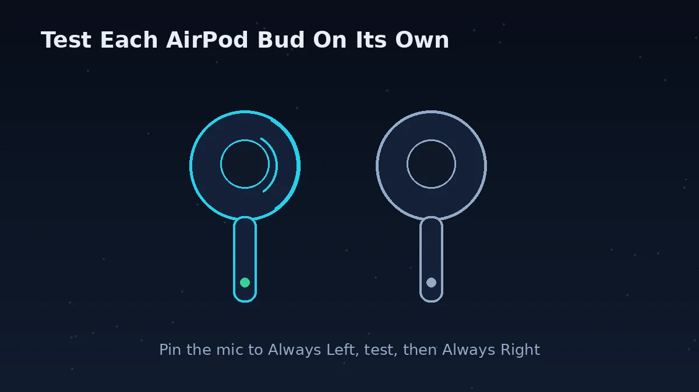
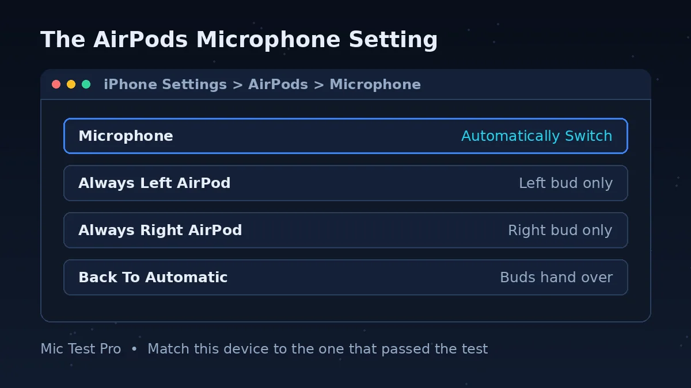
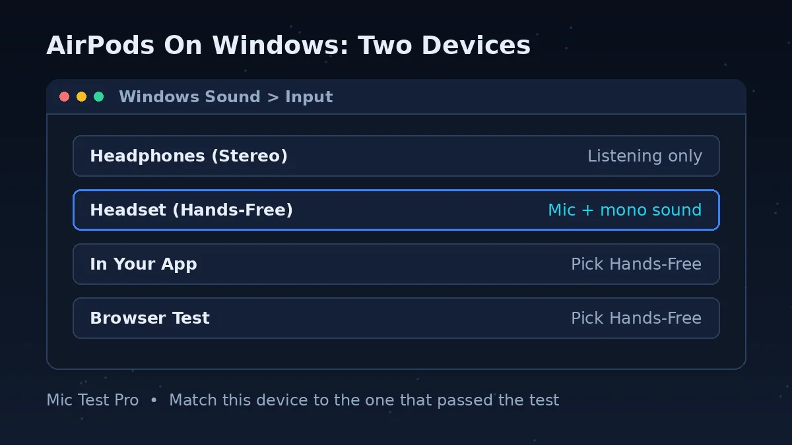
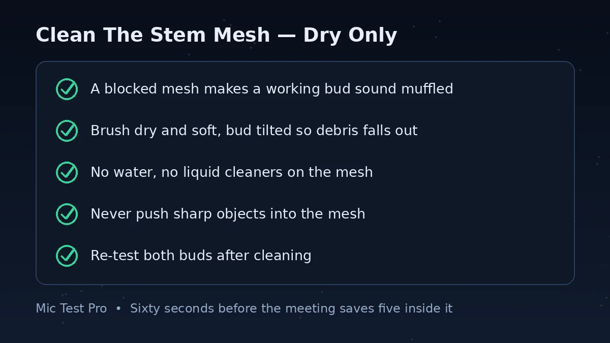

Why Test Your AirPods Microphone Before A Call?

An AirPods mic problem has three possible owners: the bud, the Bluetooth connection, or the app. The buds are small, the microphone setting is hidden, and Windows shows AirPods as two different devices — so the same “nobody can hear me” symptom can come from four different places, and guessing which one wastes the first minutes of every call.
There is a microphone in each AirPod. By default the Microphone setting is Automatic, so either AirPod can act as the microphone — and if you wear only one AirPod, that AirPod is the microphone. That is why a one-sided fault is so common: the mic can quietly move to the bud in the case, the bud with the blocked mesh, or the bud with the dying battery, while the bud in your ear does nothing.
This page works with AirPods (2nd, 3rd and 4th generation), AirPods Pro (1st, 2nd and 3rd generation) and AirPods Max — any AirPods that connect over Bluetooth and appear as a microphone in your browser. AirPods Pro 3 add dual beamforming microphones, an inward-facing microphone, a speech-detecting accelerometer, Voice Isolation and studio-quality audio recording — but even the newest hardware still depends on the same Microphone setting and the same Bluetooth connection.
The test below separates the layers in seconds: start it, speak, and watch the Device box. If it names your AirPods and the waveform moves, the buds and the connection work — and the fault is in the app's device choice. If it stays flat, the guide below takes you through the microphone setting, the one-bud test, the Windows two-device trap and the stem-mesh clean.
How To Test AirPods Mic
Click “Start Mic Test” above and allow microphone access. The Device box should name your AirPods — if it names a laptop mic instead, the browser is listening to the wrong place.
Speak at your normal call volume. The waveform should move clearly while you speak and settle when you stop, and the input level should react without staying pinned at zero.
Stay silent for a few seconds and note the Noise Level. Then make the sounds that will exist during the real call — typing, a fan, an open window. If the noise reading jumps while you are silent, your callers will hear that noise too.
Test each bud on its own — this is the AirPods microphone test that matters most. Put one bud in its case, speak, and note the result. Then swap. If one bud passes and the other fails, the fault is that bud, not your phone or computer.
When this test passes, open the app you are about to join and select the same AirPods device there. Testing AirPods microphone input here first means you know the buds work before the app gets a say.
The AirPods Microphone Setting: Automatic, Always Left, Always Right

Apple gives the AirPods microphone three settings, and the default is Automatic — either AirPod can act as the microphone. That handover is invisible, which is why a mic can work on Monday and fail on Tuesday with nothing changed: the active bud changed.
On iPhone or iPad, open the Settings app and tap the name of your AirPods, then tap Microphone. If Microphone is not displayed, tap Audio & Routing first. Then choose Automatically Switch AirPods, Always Left AirPod, or Always Right AirPod.
On a Mac, choose the Apple menu, then click System Settings. Click the name of your AirPods, then click Microphone — if it is not displayed, click Audio & Routing first. The same three choices appear.
If you set Microphone to Always Left or Always Right, that AirPod keeps being the mic even if you remove it from your ear or put it in the case. That is the trap: pin the mic to a bud, put that bud away, and your calls go silent while the other bud sits in your ear doing nothing.
Use the pin as a diagnostic, not a default. Set Always Left, test, then Always Right, and test again — the bud that fails is the one to clean, charge or replace. Then switch back to Automatically Switch AirPods and let the buds hand over.
Common AirPods Microphone Problems
Only One Bud Works As The Mic
The Microphone setting is pinned to Always Left or Always Right, or Automatic handed the mic to the bud in the case. Test each bud alone on this page: put one bud in its case, speak, then swap. The bud that fails is the one to clean, charge or replace — not your phone or computer.
Nobody Hears You On Windows
Windows lists AirPods as two devices: Headphones (Stereo) for listening and Headset (Hands-Free) for the mic. If your app picked the stereo device as its input, there is no mic to use — and if it picked Hands-Free, your music drops to mono while the mic is live. Pick Headset (Hands-Free) as the input in your app.
Your Voice Sounds Muffled Or Far Away
The usual causes, in order: the stem mesh is blocked, the bud is not seated in your ear, the mic is pinned to the bud in the case, or the Bluetooth link dropped to its narrowband call mode. Clean the stem mesh dry, reseat the bud, test each bud alone — the one that stays muffled is the faulty one.
AirPods Connected To The Wrong Device
AirPods reconnect to the last device they used, which may be your phone rather than your laptop. If the mic works on your phone but not the laptop, the buds are still on the phone. Disconnect them from the other device, connect them to the computer, and run this test again.
Battery Dies Mid-Call
The mic bud drains faster than the other one. If one bud is at 10% and the other at 90%, Automatic may still hand the mic to the low one — and the call dies with it. Charge both buds before an important call, or pin the mic to the charged bud for the duration of the meeting.
The App Uses The Laptop Mic Instead
The browser or the app selected the built-in microphone while the AirPods sat connected. Compare the Device box name on this page with the app's input device — they must match. If they do not, one of the two is listening to a different place, and that is the whole fault.
AirPods Mic Problems: Problem, Cause, Fix
| Problem | Most Likely Cause | Fix | Check on this page |
|---|---|---|---|
| Nobody can hear you at all | The mic is pinned to a bud in the case, or the AirPods are connected to another device | Set Microphone to Automatically Switch AirPods, or pin it to the bud in your ear. Check the buds are connected to this device, not your phone. | Input Level stays flat when you speak |
| Only the left (or right) bud works as the mic | Microphone is set to Always Left AirPod or Always Right AirPod | Settings > tap the name of your AirPods > Microphone > Automatically Switch AirPods. | Tap test: only one bud spikes the level |
| This test works, but your app does not hear you | The app selected a different input — usually the laptop's built-in mic | In the app, select AirPods (or Headset Hands-Free on Windows) as the microphone. The name must match the Device box on this page. | This page hears you — the fault is in the app |
| Your voice is muffled or quiet | The stem mesh is blocked, or the bud is not seated in your ear | Brush the mesh dry and soft, bud tilted so debris falls out. No water, no liquid cleaners, no sharp objects. Reseat the bud and re-test both buds. | Input Level barely moves at normal distance |
| AirPods work on your phone but not on Windows | Windows shows AirPods as two devices and the app picked the stereo one | In Windows Sound > Input, pick Headset (Hands-Free). In your app, pick the same Hands-Free device for the mic. | Device name shows Headphones (Stereo) instead of Headset |
| The mic cuts out when music plays | The Bluetooth link switched between the stereo profile and the hands-free profile | Stop the music, or accept mono call audio while the mic is live. Re-test with no audio playing. | Noise Level jumps when audio starts |
| It worked yesterday and stopped today | Automatic switched the mic to the other bud, or the buds reconnected to your phone | Run this test, then test each bud alone. Check which device the AirPods are connected to. | One bud passes, the other fails |
| People hear echo of themselves | The mic picks up speaker audio, or the app uses the laptop mic with external speakers | Use the AirPods for both mic and speakers, or switch the app's speaker to the AirPods. Move the mic closer to you. | Echo appears when the other side speaks |
AirPods On Windows: Two Devices, One Choice

Windows shows AirPods as two devices, and the names tell the story: Headphones (Stereo) is listening only, Headset (Hands-Free) is mic plus mono sound. If your app picks the stereo device as its input, there is no mic to pick — and if it picks Hands-Free, your music drops to mono. That is the Bluetooth trade-off in plain sight: one link cannot carry stereo music and a live mic at the same time.
The numbers behind it come from the Bluetooth specs: wideband speech in the Hands-Free Profile uses the mSBC codec at 16 kHz, while narrowband calls use 8 kHz — and music over A2DP uses the SBC codec at 44.1 or 48 kHz, up to 512 kb/s for two channels. Stereo music and a phone-quality call are simply different jobs on the same radio.
On Windows, open Settings > System > Sound > Input and pick Headset (Hands-Free). Then open your app and pick the same Hands-Free device for its microphone. Test here in the same browser you will use for the call — if this page names the Hands-Free device and the waveform moves, Windows has the right device.
Clean The Stem Mesh — Dry Only

A blocked mesh is the most fixable AirPods mic fault there is. Earwax and pocket lint build up over the small mesh at the end of the stem, and a blocked mesh is the most common reason a working bud suddenly sounds muffled. The fix takes a minute and costs nothing — but the wrong fix, water or a pin, can finish the bud.
Brush dry and soft, with the bud tilted so debris falls out instead of in. No water, no liquid cleaners on the mesh. Never push sharp objects into the mesh. Then re-test both buds here — one at a time — so you can prove the clean worked instead of hoping it did.
AirPods Mic Test FAQs
How do I test my AirPods microphone?
Open this page in your browser, click Start Mic Test and allow microphone access. Speak normally: if the waveform moves and the Device box names your AirPods, the mic works. Then test each bud on its own — put one bud in its case, speak, and swap. That is how to test AirPods mic properly: the whole pair first, then each bud alone.
How do I test AirPods mic on iPhone?
Connect the AirPods, open this page in Safari or Chrome on the iPhone, allow microphone access and speak. If the Device box names your AirPods, the buds and the connection work. To find which bud is the mic, go to Settings, tap the name of your AirPods, then tap Microphone — if it is set to Always Left or Always Right, that bud is the mic even if it is in the case.
Why is my AirPods mic not working on Windows?
Windows shows AirPods as two devices: Headphones (Stereo) for listening only, and Headset (Hands-Free) for the mic. If your app picked the stereo device, there is no mic to use. Open Windows Settings > System > Sound > Input, pick Headset (Hands-Free), then pick the same device in your app. Test here first — if this page names the Hands-Free device, Windows has the right one.
Why does only one AirPod work as the microphone?
There is a microphone in each AirPod, and the Microphone setting decides which one is live. By default it is Automatic, so either bud can be the mic. If it is set to Always Left AirPod or Always Right AirPod, that bud stays the mic even if you remove it from your ear or put it in the case. Set it back to Automatically Switch AirPods, or pin it to the bud in your ear.
Can I do an AirPods sound check online without an app?
Yes. This page is an AirPods sound check online: it runs in your browser, needs no app and no download, and shows your input level, waveform, noise and latency in seconds. It checks the microphone your browser can reach — for a full app check, select the same AirPods device in the app afterwards.
What is the AirPods microphone setting?
It is the Microphone setting in your AirPods options, with three choices: Automatically Switch AirPods, Always Left AirPod, or Always Right AirPod. On iPhone or iPad, open Settings, tap the name of your AirPods, then tap Microphone — if Microphone is not displayed, tap Audio & Routing first. On a Mac, choose the Apple menu, then System Settings, click the name of your AirPods, then Microphone.
How do I test my AirPods microphone on a Mac?
Connect the AirPods, open this page in your Mac browser, click Start Mic Test and speak. If the waveform moves and the Device box names your AirPods, the mic works. To change which bud is the mic, choose the Apple menu, then System Settings, click the name of your AirPods, then Microphone, and pick Automatically Switch AirPods, Always Left AirPod or Always Right AirPod.
Does this AirPods microphone test work with AirPods Pro?
Yes. AirPods Pro (1st, 2nd and 3rd generation) connect the same way and this page tests them the same way. AirPods Pro 3 add dual beamforming microphones, an inward-facing microphone, a speech-detecting accelerometer, Voice Isolation and studio-quality audio recording — but the test is the same: waveform, input level and one bud at a time.
Why do my AirPods sound muffled on calls?
The usual causes, in order: the stem mesh is blocked and needs a dry brush; the bud is not seated in your ear; the mic is pinned to the bud in the case; or the Bluetooth link dropped to its narrowband call mode. Test each bud alone here first — if one bud is clear and the other is muffled, the fault is that bud.
Can I test my AirPods microphone on Windows?
Yes. Connect the AirPods to Windows, open this page in your browser and click Start Mic Test. Make sure Windows Sound > Input is set to Headset (Hands-Free), not Headphones (Stereo) — the stereo device has no mic. If this page names the Hands-Free device and the waveform moves, the AirPods mic works on Windows.
Does this mic test record or upload my voice?
No. This tool analyses the microphone in your browser so you can see the waveform and readings. It does not need you to record a message, and your audio is not uploaded or stored by this page.